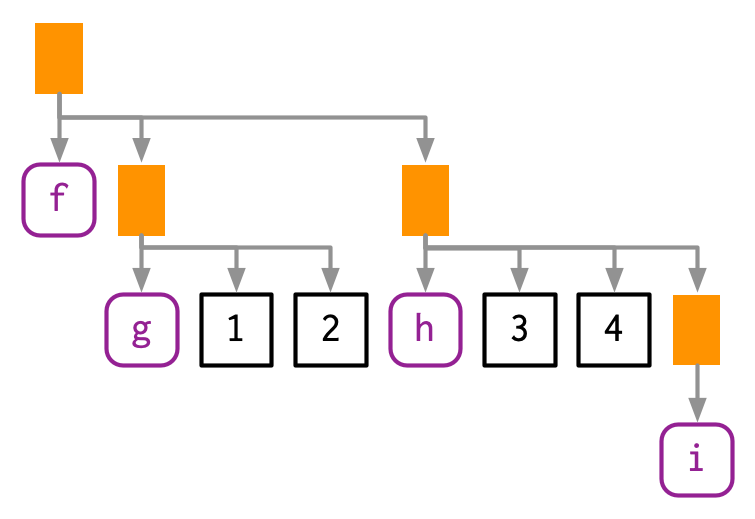

WOMBAT 2024: Advanced R Tips & Tricks
Outline
Metaprogramming
Metaprogramming
Metaprogramming is programming about programming.
In other words, writing code that can inspect and modify code.
A powerful idea
Unlike most programming languages, R embraces metaprogramming and non-standard evaluation (NSE).
This powers much of the strange but wonderful interface designs in R and its packages.
The rlang package
A package for writing R code that interacts with R code.
Not a new idea!
Metaprogramming/NSE doesn’t need the rlang package.
There are base R equivalents to the functions shown.
NSE is widely used in base R (not just in the tidyverse!)
Parsing code
Every time you run code anywhere in R it needs to be ‘interpreted’ by the parser.
The parser reads unstructured text (your written code) and interprets it as an expression.
Deparsing code
Deparsing takes an expression and converts it back to text.
This can be useful for providing informative error messages, or print output for objects which store expressions.
Code is data
Expressions (code) can be used like any other data in R.
Inspecting code
R expressions behave exactly like lists
Inspecting code
They can also be subsetted to inspect the functions and arguments.
Modifying code
Expressions can be modified by replacing their elements.
Looking at code
Your turn!
How do infix operators (like +, *, and %in%) get interpreted by the parser?
Try to parse 5 + 3 * 7, and see how the order of operations are represented in the parsed expression.
Bonus: rewrite this expression without infix operators.
Abstract syntax trees
The structure of expressions is commonly known as an abstract syntax tree (AST). We can use lobstr::ast() to explore it.

Abstract syntax trees
More complicated (nested) code results in a larger/deeper AST.
Abstract syntax trees
Your turn!
Inspect the AST for the following code:
5 + 3 * 7mtcars |> select(cyl)mtcars |> mutate(wt/hp)
How does R structure these expressions?
Bonus: does -2^2 yield 4 or -4? Why?
Analysing code
How would you programmatically analyse code from hundreds of packages?
- Regular expressions on the source code? Maybe…
- Traverse the parsed source code’s AST? Yes!
This however can be tricky, requiring recursive algorithms that explore the AST using breadth/depth first search (BFS/DFS).
Coding code
You can also write code that creates code. For this we use the call2() function
parse_expr() or call2()?
You might be tempted to parse() code that you paste() together, but this is unsafe and unreliable! Why?
Metaprogramming
Coding code
Metaprogramming allows us to create code with code!
It also allows us to take code, and change how it is ran.
(Non-)standard evaluation
Code evaluation
Note
Standard evaluation
- The code and environment is unchanged.
- The result is evaluated as expected.
Note
Non-standard evaluation (NSE)
- The code and/or the environment is changed.
- Leading to the evaluated result changing.
Standard or non-standard evaluation?
Your turn!
Do these expressions use standard evaluation or NSE?
library(rlang)a + b * cmtcars |> select(cyl)read_csv("data/study.csv")ggplot() + geom_line()mtcars |> mutate(wt/hp)with(mtcars, wt/hp)
The building blocks of code evaluation
There are four building blocks used in evaluating code.
- Constants: A specific value like
1or"data/study.csv". - Symbols: A name of an object, like
pi. - Expressions: Code structured as an AST.
- Environments: The place where named objects are found.
Question?
How are these building blocks used together to construct and evaluate code?
The building blocks of code evaluation
In rlang, we have three main building block functions:
sym("pi"): a symbol/name likepiexpr(1/pi): an expression for1/piquo(1/pi): a quosure (expression and environment)
Follow along!
Use call2() and these building blocks to construct and evaluate mtcars |> mutate(wt/hp).
Hint: x |> f(y) is parsed as f(x, y).
The building blocks of code evaluation
Your turn!
Spot the difference.
How do the results of the following functions differ?
sym("2 * pi")expr(2 * pi)quo(2 * pi)
Capturing code
More often than not, NSE involves capturing user code that was used in your function. This is done with en*() functions:
ensym(x): capture a symbolenexpr(x): capture an expressionenquo(x): capture a quosure
Unquoting (bang-bang!!)
Why doesn’t the following code work?
Unquoting (bang-bang!!)
To use captured code in our functions, we need to unquote it.
log_expr <- function(x) {
# Capture expression
x <- enexpr(x)
# Return new expression with log()
expr(log(!!x))
}
log_expr(1/pi)log(1/pi)expr(log(!!x)) will create an expression (expr()) that replaces x with its value (1/pi).
Unquoting (bang-bang!!)
Unquoting in analysis
Unquoting replaces the object’s name with its value.
This is also useful when using NSE functions.
How can !! be useful with dplyr?
Unquoting (bang-bang!!)
Suppose we wanted to programmatically filter() mtcars$cyl:
What’s the problem? How can unquoting help?
Embracing inputs ({{curly-curly}})
The pattern !!enquo(x) is so often in functions that it has a special shortcut known as ‘embrace’ or ‘curly-curly’. The code {x} is identical to !!enquo(x).
Consider this function for summarising a value’s range:
Why is enquo() important here?
Unquote-splicing (bang-bang-bang!!!)
It is sometimes useful to unquote multiple code elements across multiple arguments of a function.
This is done with unquote-splicing using !!! on a list of symbols, expressions, or quosures.
A list symbols, expressions, or quosures can be:
- created with
syms(),exprs(),quos() - captured with
ensyms(),enexprs(),enquos()
This is often used to capture, modify and pass on dots (...).
Unquote-splicing (bang-bang-bang!!!)
For example, the var_summary() function can be extended to accept multiple variables (or expressions) via dots (...).
Tidy dots (:=)
Tidy dots (:=) allow the argument names to be unquoted too.
For example:
# A tibble: 1 x 1
my_var
<dbl>
1 20You can alternatively use !!! with a named list.
Tidy evaluation
Tidy evaluation
Tidy evaluation refers to the use of NSE in the tidyverse to make data analysis easier.
NSE is used widely across tidyverse packages, but at the same time it is used sparingly.
Your turn!
Question
Where have you seen NSE used in tidyverse packages?
Tidy evaluation
Tidy evaluation searches the variables of the data first, followed by the search path of the user’s environment.
This is a type of NSE, since it changes the environment in which code is ran.
mpg/wt would ordinarily error since mpg and wt aren’t found, but mutate() uses NSE to first search the dataset.
Tidy evaluation
This is accomplished using eval_tidy(), with the arguments:
expr: The expression (code) to evaluatedata: The dataset ‘mask’ to search firstenv: The environment to search next.
Unlike eval(), this will:
- Respect the environments of quosures
- Attach pronouns for
.dataand.env
Tidy evaluation
We can use eval_tidy() to create a simple dplyr::mutate() function variant.
Question: What features are missing in our function compared to dplyr::mutate()?
Domain specific languages: tidyselect
The tidyselect package is useful for selecting variables from a dataset using NSE. The code/behaviour is so different it forms a domain specific language (DSL).
tidyselect in the wild
You almost certainly have used tidyselect in the tidyverse.
It powers column selection in:
dplyrforselect(),across(), and more.tidyrfor almost everything.
Domain specific languages: tidyselect
The tidyselect domain specific language (DSL), which uses NSE to identify columns with:
var1:var10matches("x.\\d")all_of(<chr>)where(<fn>)
Domain specific languages: tidyselect
If you need tidy column selection, simply import and use tidyselect::eval_select().
This function returns the column numbers that were selected.
tidyselect
Putting it all together, we can create our own dplyr::select() function variant.
Your turn!
Modify this function to instead accept the selected columns via the dots (...), just like dplyr::select().
Tidyverse design principles
Notice how little NSE the tidyverse uses to great effect.
A lot of thought has gone into designing the tidyverse, which mostly uses standard evaluation: https://design.tidyverse.org/
A design compromise
While very appreciated by users, NSE introduces a lot of complexity when programming with tidyverse packages.
Software design with NSE
In most cases you shouldn’t use NSE in your code.
Why?
NSE can be incredibly confusing for others!
Code might work outside your function, but is completely different when used inside it.
Understanding NSE however is very useful for advanced use of tidyverse packages in non-interactive contexts.
Software design with NSE
If you must use NSE, you should:
Use it sparingly
Be consistent
Clearly document it
Get a lot of design benefit from it
(not just for slightly less typing!)